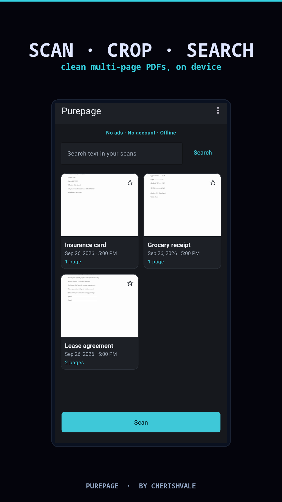
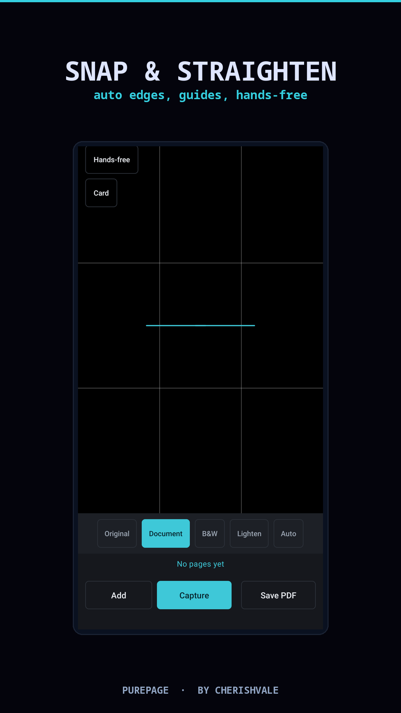
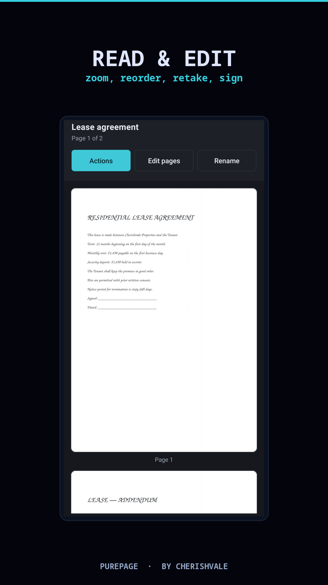

In development · Google Play



Auto edge detection finds the page and lets you drag the corners to crop and straighten a photo taken at an angle.
Document, black-and-white and lighten modes, plus a light and rule-of-thirds guides in the camera.
Capture page after page, reorder or retake any of them, or add photos from your gallery.
Reopen a saved PDF to reorder, rotate, delete or insert pages — no need to start over.
Draw a signature, highlight a clause, or black out sensitive details. Undo and redo as you go.
On-device text recognition makes your scans searchable, and can add a text layer so the exported PDF is searchable in other apps too.
A4, Letter or Legal, your choice of image quality, then share, print or save a copy.
Deleted scans wait in Trash for 30 days, ready to restore. There is no server copy to clean up.
There are no banners, no sign-up and nothing plays before a save. Scanning works with the radio off.
Scanning, cropping, editing, signing and on-device search are free. Premium adds three heavy tools, once.
Purepage keeps your documents on your device. Scans, crops, annotations and recognised text are produced and stored locally, there are no analytics or advertising libraries, and deleting a scan removes it for good — there is no server copy anywhere. Network access exists solely so Google Play can validate the optional one-time purchase.